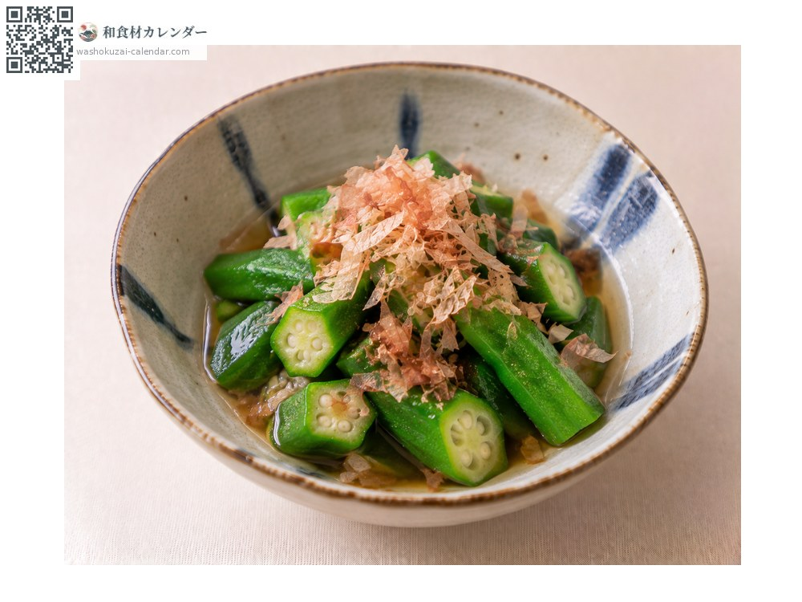
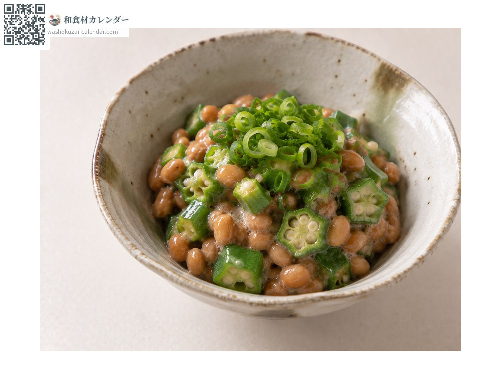
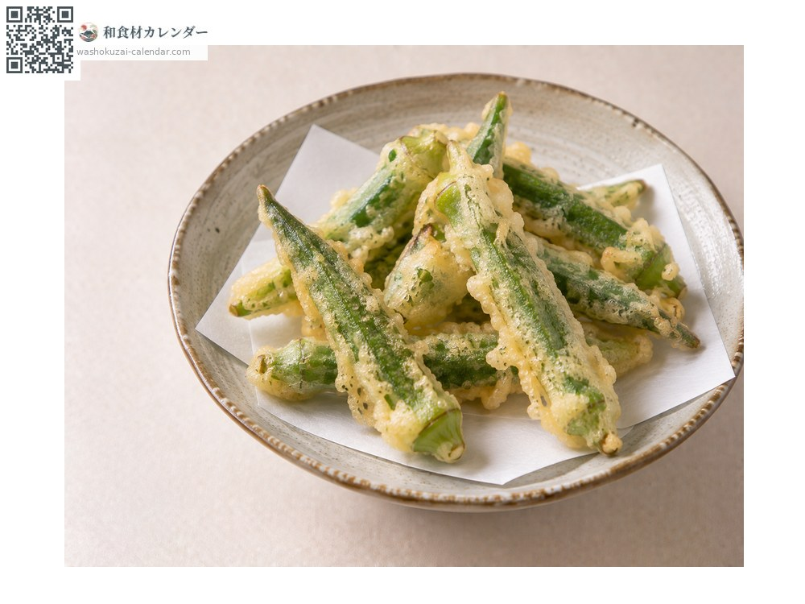
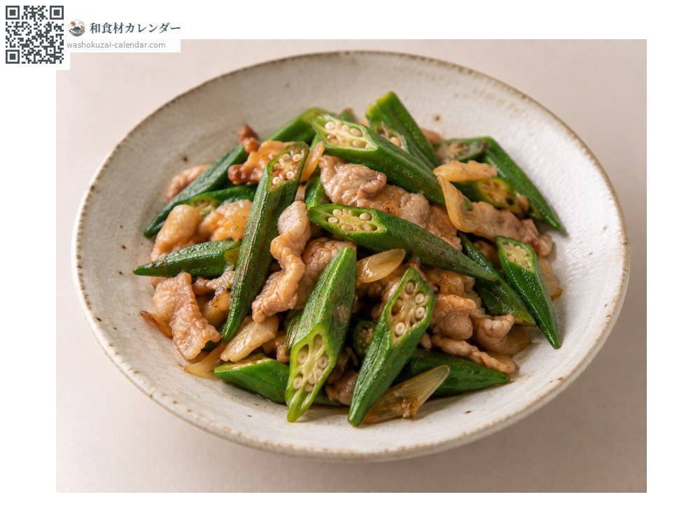

ผัก
กระเจี๊ยบเขียว
オクラ おくら
อร่อยที่สุดในเดือน ก.ค., ส.ค., ก.ย.

ช่วงที่อร่อยที่สุด
ม.ค.
ก.พ.
มี.ค.
เม.ย.
พ.ค.
มิ.ย.
ก.ค.
ส.ค.
ก.ย.
ต.ค.
พ.ย.
ธ.ค.
ช่วงอร่อยที่สุดมีจำหน่าย
วิธีปรุง

ผักลวกราดน้ำดาชิ
ลวกเร็ว ๆ แล้วแช่น้ำดาชิ

สับคลุกนัตโตะ
ความเหนียวจะเพิ่มขึ้น

เทมปุระ
ทอดทั้งฝัก

ผัด
ผัดกับเนื้อสัตว์
วิธีเลือก
ขนอ่อนขึ้นหนาแน่นและเหลี่ยมชัดเจน ฝักที่ใหญ่เกินไปจะแข็ง
วิธีเก็บรักษา
ไม่ทนความเย็น ห่อกระดาษหนังสือพิมพ์แล้วเก็บช่องผัก ใช้ให้หมดใน 2-3 วัน
แหล่งผลิตหลัก
เกร็ดน่ารู้
ถูขนอ่อนออกด้วยเกลือจะทำให้สัมผัสดีขึ้น ถ้าหั่นก่อนต้มความเหนียวจะไหลออก จึงควรต้มทั้งฝัก
วัตถุดิบที่อร่อยที่สุดในช่วงเดียวกัน
 ผักกาดหอมห่อ
ผักกาดหอมห่อ ผักกวางตุ้งฮ่องเต้
ผักกวางตุ้งฮ่องเต้ ผักปลัง
ผักปลัง เมียวกะ (ดอกขิงญี่ปุ่น)
เมียวกะ (ดอกขิงญี่ปุ่น) ใบชิโสะ
ใบชิโสะ ช่อดอกชิโสะ
ช่อดอกชิโสะ ช่อเมล็ดชิโสะ
ช่อเมล็ดชิโสะ เมล็ดซันโชอ่อน
เมล็ดซันโชอ่อน